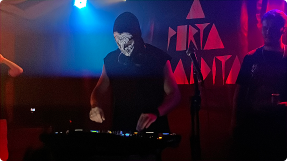
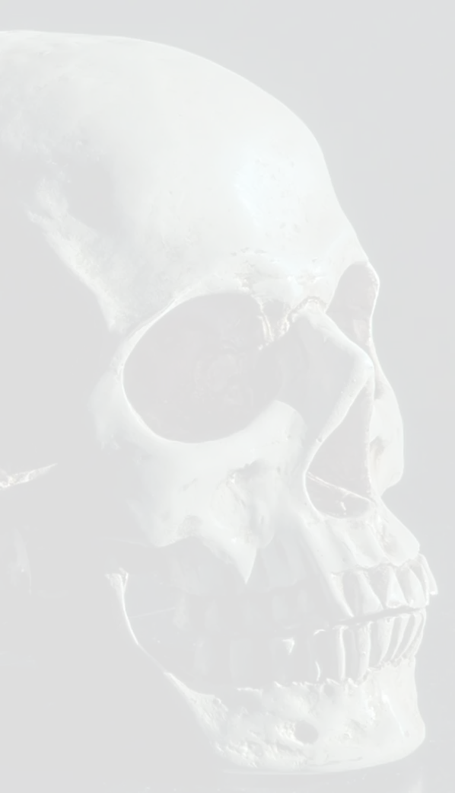
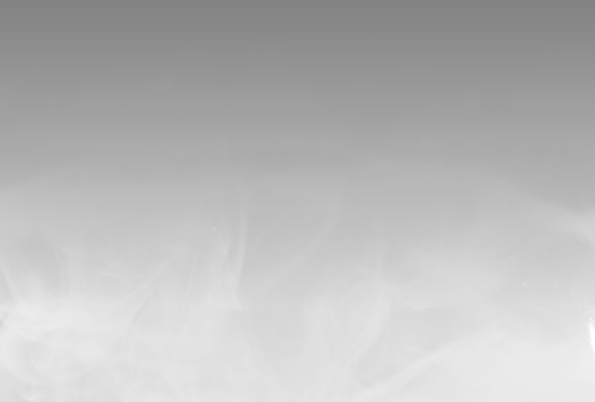

Bonde do Autismo
ft. jooj
Raízes no EDM clássico de 2012 — na mesma época em que começou a criar intros para youtubers e para si mesmo, nasceu a paixão pela música eletrônica.
Com quase uma década produzindo música desde julho de 2016, DJ Escoliose chegou ao seu projeto atual em meados de 2023, quando começou a transformar o funk brasileiro em algo que ele mesmo ouviria: pesado, sujo e cheio de identidade.
Como fã de longa data da bass music e dos sons mais agressivos do EDM — Dubstep, Rawstyle, Tearout, Hard Techno — a ideia era simples e ambiciosa ao mesmo tempo: pegar o ritmo do baile e cruzar com os elementos que sempre o moveram.
O resultado é um som que mistura Baile Funk, Favela Bass e Ritmada com Dubstep, Garage e uma pitada de Future Bass — criando o que ele chama de funk moderno, do qual se considera um dos pioneiros.
Em 20 de maio de 2024, lançou sua primeira track: "OH DESGRAÇADO". A faixa rapidamente ganhou tração na cena underground e hoje acumula mais de 8 mil plays no SoundCloud, plataforma que continua sendo sua casa principal.

Seu set debut aconteceu no evento da coletiva Mechanical na Porta Maldita, em Pinheiros, SP. Desde então, a cena paulistana tem sido o palco principal de sua trajetória — com os olhos já voltados para as casas da sua cidade vizinha, Santos.
Além de artista, trabalha profissionalmente como engenheiro de áudio (mix e master) e produtor há mais de 3 anos, levando a mesma seriedade sonora para projetos de outros artistas.
seguidores
plays total
anos de carreira

